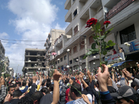

Human Rights Issues In The Context Of Recent Mass Protests In SyriaAmnesty International considers that the crimes being committed in Syria amount to crimes against humanity as they appear to be part of a widespread, as well as systematic, attack against the civilian population. Many hundreds of people have died during or in connection with the mass protests which began in mid-March 2011. Many of them were reportedly killed by live ammunition used by the Syrian army and security forces. The armed forces' operations have involved shelling of residential areas. The Syrian authorities have arrested thousands and held many incommunicado at unknown locations where torture and other ill-treatment are reported to be rife. Scores of people are reported to have died in custody, many, it seems, as a result of torture or other ill-treatment. Some persons detained have been subjected to enforced disappearance. Many appear to have been detained simply for expressing their support for protests or their opposition to the regime orally or in writing. Human rights defenders are among those arrested and allegedly tortured in detention. For detailed and current background information on the human rights situation in Syria, please visit the Amnesty International Syria page. Click image to enlarge © Private - GA peaceful pro-reform demonstration in Banias, a coastal town north of Damascus Extrajudicial Executions and Wanton Destruction The shocking escalation in unlawful killings, torture, arbitrary detention and the wanton destruction of homes in Syria demonstrates just how urgent the need for decisive international action to stem the tide of increasingly widespread attacks on civilians by government forces and militias which act with utter impunity. In recent field investigations in Syria, Amnesty International has found disturbing new evidence of grave abuses — many of which amount to crimes against humanity and war crimes — committed by the Syrian army in towns and villages around Idlib, and Aleppo, as well as in the Jebel al-Zawiyah and Jebel al-Oustani areas (north-west of Hama) between late February and late May 2012. Syrian government armed forces and militias are rampaging through towns and villages, systematically dragging men from their homes and summarily executing them. They are burning homes and property and sometimes the bodies of those they have killed in cold blood. They are recklessly shelling and shooting into residential areas, killing and injuring men, women and children. They are routinely torturing detainees, sometimes to death. Amnesty International continues to call on the Security Council to refer the situation in Syria to the Prosecutor of the International Criminal Court (ICC), and to impose an arms embargo on Syria with the aim of stopping the flow of weapons to the Syrian government. It urges the governments of the Russian Federation and China in particular to halt immediately transfers to the Syrian government of all weapons, munitions, military, security, and policing equipment, training and personnel. It also calls on the Security Council to implement an asset freeze against President Bashar al-Assad and others who may be involved in ordering or perpetrating crimes under international law. Deaths in custody Relentless repression has marked Syria since March 2011, as the government continues its efforts to stifle increasing numbers of pro-reform protests. Scores of people - believed to have been detained for their actual or suspected involvement in the protests - are reported to have died in custody. Some were children. Amnesty International has documented eighty eight individual cases in its report Deadly detention: Deaths in custody amid popular protest in Syria. In more than half of the cases people filmed the bodies to record and show the world their injuries. Many of them appear to have been tortured. Forensic experts contacted by Amnesty International analyzed the footage to help determine possible causes of death. However, the Syrian authorities have failed to carry out credible investigations into any of the cases or ensure accountability for the perpetrators. Amnesty International concludes that the torture reported here has been committed as part of a wide-spread, as well as systematic, attack on the civilian population - crimes against humanity. It is calling on the UN Security Council to refer the situation in Syria immediately to the Prosecutor of the International Criminal Court. Terror In Tell Kalakh The brutal methods used in a devastating Syrian security operation in the western town of Tell Kalakh may constitute crimes against humanity, Amnesty International concluded in a report published in July 2011. Crackdown in Syria: Terror in Tell Kalakh documents deaths in custody, torture and arbitrary detention that took place in May of 2011 when Syrian army and security forces mounted a broad security sweep, lasting less than a week, against residents of the town near the Lebanese border. The accounts Amnesty International has heard from witnesses to events in Tell Kalakh paint a deeply disturbing picture of systematic, targeted abuses to crush dissent. Most of the crimes described in this report would fall within the jurisdiction of the International Criminal Court. The operation in Tell Kalakh began on 14 May, 2011, when the army and security forces entered the town following a demonstration calling for the downfall of the regime. At least one person, 24-year-old Ali al-Basha was killed on that first day, apparently by snipers, and even the ambulance carrying his body came under fire. As many tried to leave, Syrian forces fired on fleeing families. At least nine people died in custody after being arrested during the security operation in Tell Kalakh, according to witnesses. Eight of these men – some of whom had been active in demonstrations – were shot at and wounded as they were ordered out of a house, and were then taken away by soldiers. Amnesty International considers that crimes committed in Tell Kalakh amount to crimes against humanity as they appear to be part of a widespread, as well as systematic, attack against the civilian population. A range of conduct highlighted in this report, including torture, murder, arbitrary detention and other severe deprivation of liberty, sexual violence, and other inhumane acts committed intentionally to cause great suffering or serious damage to mental or physical health, some of which have been documented elsewhere by Amnesty International, would fall within the definition of crimes against humanity set out in the Rome Statute of the International Criminal Court. See for example: Amnesty International: Syria video points to 'shoot to kill' policy of security forces 26 May 2011 Amnesty International: Crackdown in Syria: Terror in Tell Kalakh 6 July 2011 Amnesty International: Is there a scorched earth policy in Syria? 14 June 2011 Amnesty International: Syrians tell of torture in detention amid mass arrests 3 May 2011 |
||
| © Copyright 2011 Amnesty International USA |


{kind=link}